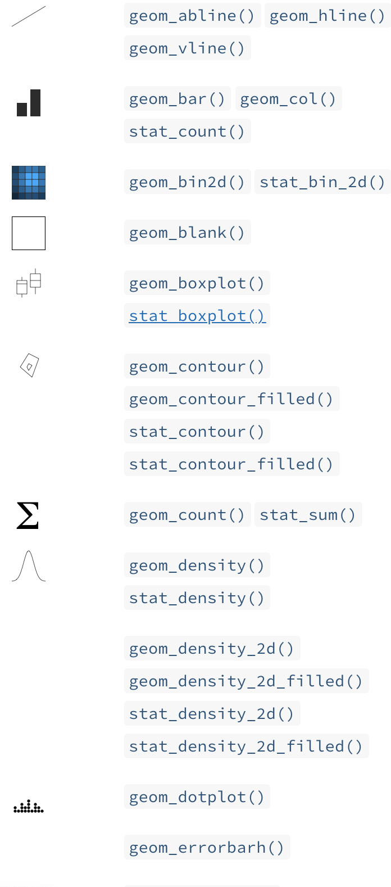
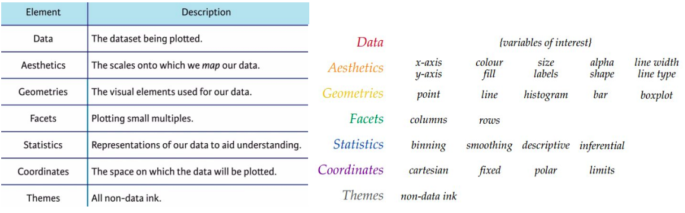
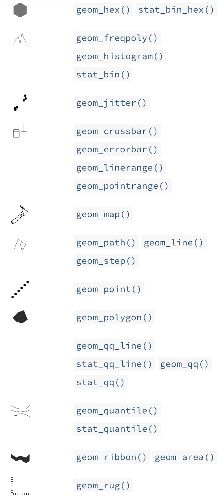
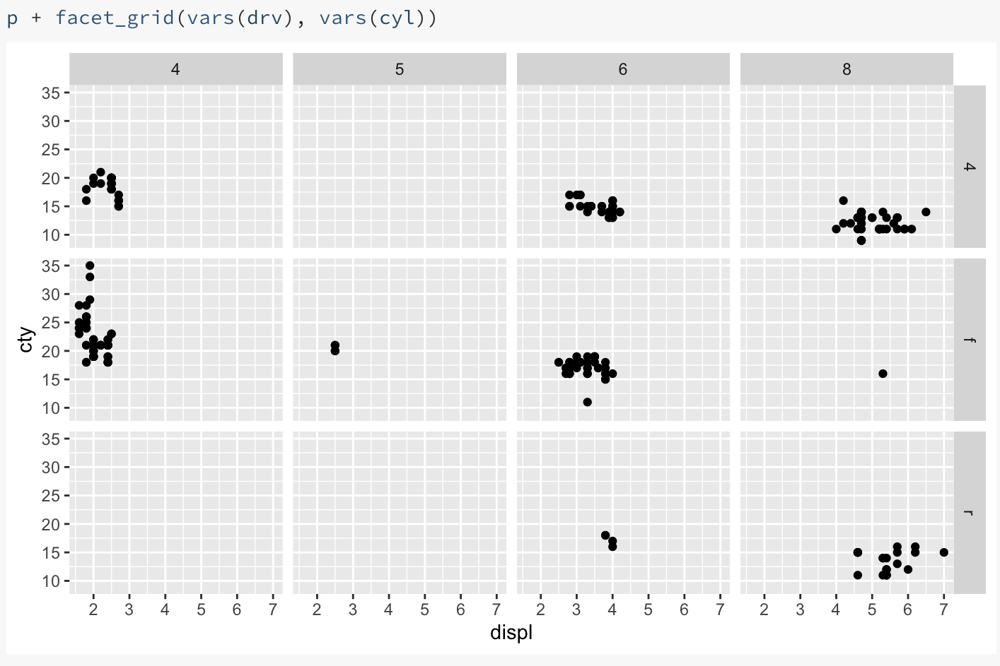

Math & Stats, Dalhousie University
2021-09-20
A way of describing a visualization

We will use “tidy data” arranged in a table
This arrangement makes it easy to use one variable for each aesthetic feature of a plot (axis position, colour, facet, text labels, …)
We map variables to features of the graph
Discrete and quantitative variables are handled the same way. The details of the scale and geometry will determine their interpretation.
Range of values on x or y axis; formatting of axis labels
Mapping from values to a discrete or continuous colour scale; choice of colours
Mapping from values to a shape, or line thickness, or symbol size
What kind of plot do you want?



Do you want to perform calculations on your data before plotting?
What coordinate system do you want to use?
All the “non-data ink”:
The grammar of graphics is a way of describing a visualization.
ggplot2 is a computer implementation of this idea.
Other implementations are available for python (plotnine), javascript (D3), julia (Gadfly).
Aesthetics are mappings between variables in your dataset and your visualization, defined using the aes function.
Which of the following is a possible aesthetic mapping for the gapminder data set?
aes(country = x, pop = y)aes(x = country, y = pop)aes(x <- country, y <- pop)The geometry (or geom) of a plot determines how the data are displayed in your visualization.
Select the true statement.
geom_point per plotgeom_plot and geom_line.True or false: To change all the points in a scatterplot to red circles, you need to add variables to your data frame with values “red” and “circle” and map those variables to the colour and shape aesthetic.